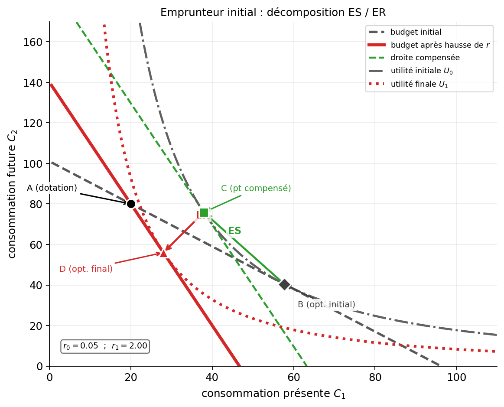

Comment un individu arbitre-t-il entre consommation présente et consommation future ?
Le taux d’intérêt est le prix relatif du présent en unités de futur. Épargner, c’est transférer des ressources vers demain ; emprunter, c’est faire l’inverse.
On retrouve ici la logique du chapitre 11 : un arbitrage entre deux usages d’une dotation initiale, puis l’étude de l’optimum et des effets d’une variation des conditions. La différence est qu’ici la dotation n’est plus du temps, mais un profil de revenus dans le temps.
Dans les chapitres précédents, le consommateur arbitrait entre deux biens à partir d’une contrainte budgétaire du type :
\[ R = p_1x_1 + p_2x_2 \]
Ici, les grandeurs changent : \(C_1\) désigne la consommation présente, \(C_2\) la consommation future, \(Y_1\) le revenu dont l’individu dispose aujourd’hui, \(Y_2\) le revenu dont il disposera demain, et \(r\) le taux d’intérêt. \(Y_1\) et \(Y_2\) sont donc deux sommes distinctes, attachées à deux dates différentes : par exemple, salaire de ce mois-ci pour \(Y_1\), salaire du mois prochain pour \(Y_2\). \(Y_2\) ne contient pas \(Y_1\). La contrainte devient alors :
\[ Y_1 + \frac{Y_2}{1+r} = C_1 + \frac{C_2}{1+r} \]
ou encore, dans le plan \((C_1,C_2)\) :
\[ C_2 = (1+r)(Y_1-C_1)+Y_2 \]
Le point \((Y_1,Y_2)\) est la dotation intertemporelle initiale. Une variation du taux d’intérêt ne modifie donc pas seulement le prix relatif du présent et du futur ; elle change aussi les possibilités de transfert autour de ce point de dotation.
L’individu reçoit un revenu \(Y_1\) aujourd’hui et un revenu \(Y_2\) demain. Il choisit sa consommation présente \(C_1\) et sa consommation future \(C_2\).
S’il épargne aujourd’hui, il transfère une partie de ses ressources vers demain. S’il emprunte aujourd’hui, il augmente sa consommation présente au prix d’un remboursement futur.
Avec deux périodes et un taux d’intérêt \(r\), on a :
\[ C_1+\frac{C_2}{1+r}=Y_1+\frac{Y_2}{1+r} \]
ou encore :
\[ C_2=(1+r)(Y_1-C_1)+Y_2 \]
La pente de la droite dans le plan \((C_1,C_2)\) vaut :
\[ -(1+r) \]
L’individu maximise :
\[ U(C_1,C_2) \]
Un optimum intérieur vérifie :
\[ TMS_{C_1,C_2}=1+r \]
Le consommateur arbitre donc entre présent et futur en comparant ses préférences au rendement de l’épargne.
Une hausse de \(r\) produit deux effets :
L’effet total sur la consommation présente et sur l’épargne dépend donc du statut initial de l’individu.
Graphiquement, la droite budgétaire pivote autour du point de dotation \((Y_1,Y_2)\), et non autour d’un point situé sur un axe. Cet effet dotation renforce l’effet revenu pour un épargnant, puisque la hausse de \(r\) améliore la valeur de sa position initiale, et il le rend défavorable pour un emprunteur, puisque la hausse de \(r\) renchérit le transfert de ressources vers aujourd’hui.
La valeur actuelle d’une somme future \(S\) reçue dans une période est :
\[ \frac{S}{1+r} \]
Sur plusieurs périodes :
\[ VA=\sum_{t=0}^{T}\frac{Y_t}{(1+r)^t} \]
L’épargne de la période 1 vaut \(S = Y_1 - C_1\). En faisant varier \(r\), deux effets s’opposent :
La courbe d’épargne individuelle peut donc être croissante à bas taux d’intérêt et se retourner à haut taux. L’effet net sur l’épargne agrégée dépend de la composition de la population et de l’intensité relative des deux effets.
Friedman distingue deux composantes du revenu :
La consommation dépend principalement du revenu permanent :
\[ C = \alpha Y^P, \quad 0 < \alpha < 1 \]
Un choc de revenu transitoire (hausse de \(Y^T\)) entraîne surtout de l’épargne, car l’agent sait que ce surcroît est temporaire. Une hausse permanente (hausse de \(Y^P\)) entraîne principalement de la consommation supplémentaire. L’agent lisse sa consommation dans le temps en utilisant l’épargne et l’emprunt comme mécanismes de transfert entre périodes.
Ce cadre prolonge directement le modèle à deux périodes : l’individu choisit un profil de consommation aussi régulier que possible, compte tenu de ses anticipations de revenu futur et du taux d’intérêt.
L’hypothèse du cycle de vie ajoute une dimension patrimoniale au lissage intertemporel. L’individu choisit son profil de consommation sur l’ensemble de sa vie, et non plus sur deux périodes seulement.
Le schéma standard est le suivant :
Cette théorie complète naturellement Friedman : le revenu permanent explique pourquoi l’on ne réagit pas fortement aux chocs transitoires, tandis que Modigliani explique comment la structure du cycle de vie façonne l’épargne agrégée et la détention de patrimoine.
Le modèle standard suppose que l’individu peut librement emprunter et prêter au taux \(r\). En pratique, cette hypothèse est souvent fausse : certains ménages voudraient emprunter, mais ne le peuvent pas.
Dans ce cas, on impose une contrainte du type :
\[ C_1 \leq Y_1. \]
Un individu qui souhaiterait choisir \(C_1 > Y_1\) se retrouve bloqué sur une solution de coin avec \(C_1 = Y_1\). Cette contrainte modifie fortement les prédictions du modèle : un choc de revenu transitoire aujourd’hui a alors un effet plus fort sur la consommation présente, et une hausse du taux d’intérêt n’a plus le même effet qu’en présence d’un accès libre au crédit.
Un agent est cohérent dans le temps si ses préférences au moment \(t\) concernant la période \(t+1\) restent les mêmes lorsque la période \(t+1\) arrive.
En pratique, on observe fréquemment des incohérences :
Ces biais s’écartent du cadre rationnel standard et constituent le point de départ de l’économie comportementale appliquée à l’épargne. Ils expliquent notamment pourquoi des dispositifs d’épargne forcée ou des engagements préalables peuvent améliorer le bien-être.
Oublier que l’effet d’une hausse de taux d’intérêt n’est pas le même pour un épargnant et pour un emprunteur, et oublier que la présence éventuelle d’une contrainte de liquidité peut bloquer complètement l’ajustement.
Ce qu’il faut voir. Les deux graphiques représentent une hausse du taux d’intérêt pour deux agents de nature différente : le premier pour un épargnant, le second pour un emprunteur. Dans les deux cas, la droite budgétaire pivote autour du point de dotation \(A=(Y_1,Y_2)\).
Les quatre points à lire. \(A\) est la dotation initiale. \(B\) est l’optimum initial. \(C\) est le point compensé : il est obtenu avec la nouvelle pente, mais en maintenant le niveau d’utilité initial. \(D\) est l’optimum final après hausse de \(r\).
Décomposition. Le passage de \(B\) à \(C\) mesure l’effet substitution : la consommation présente devient relativement plus chère, donc l’agent tend à réduire \(C_1\). Le passage de \(C\) à \(D\) mesure l’effet revenu. Pour un épargnant, cet effet revenu pousse en sens inverse de l’effet substitution. Pour un emprunteur, il va dans le même sens.
Effet dotation. C’est le point important de ce chapitre : la droite ne pivote pas autour d’un intercept, mais autour de la dotation \(A\). L’effet revenu dépend donc directement de la position initiale de l’agent par rapport à ce point.
Lecture rapide.
- épargnant : ES vers moins de \(C_1\), ER partiellement compensateur ;
- emprunteur : ES vers moins de \(C_1\), ER dans le même sens ;
- la différence entre les deux vient du fait que la hausse de \(r\) valorise la position d’un épargnant mais détériore celle d’un emprunteur.

Le graphique montre comment l’épargne \(S = Y_1 - C_1\) réagit à une variation du taux d’intérêt \(r\). Pour un épargnant, les effets de substitution (hausse de \(r\) → reporter la consommation → \(S\uparrow\)) et de revenu (hausse de \(r\) → plus riche → \(C_1\uparrow\) → \(S\downarrow\)) s’opposent : la courbe peut se retourner. Pour un emprunteur, la hausse de \(r\) alourdit le coût de l’emprunt et comprime la consommation présente.